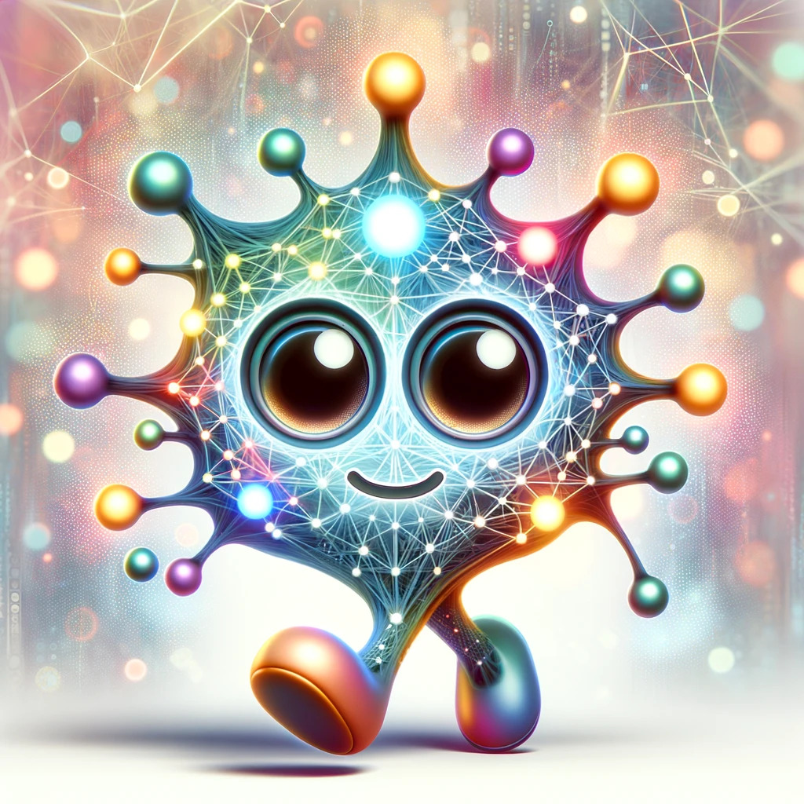

# Speech Technology is Incredible ### Will Styler - CSSA Talk Series <https://savethevowels.org/talks/cssa2025.html> --- ### Introductions - I'm an Associate Teaching Professor of Linguistics - I'm a Computational Phonetician - I study human speech perception and production using computers - This involves a mix of experiments, data analysis, recordings, and instrumental measurements - I've also done Natural Language Processing work - I work to develop new tools for measurement and teaching --- ### I'm also Director of [Computational Social Science](https://css.ucsd.edu) at UCSD - We're an interdisciplinary program uniting people across Social Science who work with and care about computation and data - We believe that **data matters because people matter** - I'm here because I'm always thinking about computers as a tool for understanding humans! --- ### But there remains an elephant in this CSSA-filled room - I'm not actually in Cognitive Science! --- <img class="r-stretch" src="img/impostor.jpg"> --- ### Cognitive Science wasn't a separate program where I grew up - I have my BA, MA and Doctorate in Linguistics from the [University of Colorado at Boulder](https://www.colorado.edu/linguistics/) - CU Boulder had the [Institute of Cognitive Science](https://www.colorado.edu/ics/) - Collaborations between faculty in CS, Philosophy, Linguistics, Psych, Education, and more - I went to their talks and was advised by an affiliate, but there was not a COGS major or Ph.D Specialization - ... but I am bothered by many COGS-flavored questions --- ### But I do have a lot of COGS ties - I collaborate lots with [Dr. Sarah Creel](https://quote.ucsd.edu/lasr/) in COGS - Who is an incredible person to talk to if you're interested in speech in COGS - CSS has [lots of Cognitive Scientists](https://css.ucsd.edu/people/faculty.html#Cognitive-Science)! - Including [Dr. Sean Trott](https://seantrott.github.io/), one of our Core Faculty - And [Dr. Shannon Ellis](https://shannon-ellis.com/) is on our steering committee - ... and I know that Language folks over here are just as awesome and effective --- ### No matter where my office is, Language is the best - Speech is even cooler than Language - ... and all the more awesome when we put computers into the process --- ## Speech Technology --- ### Speech Technology is pervasive in the US - Siri/Alexa/GoogleAssistant - ChatGPT Voice Mode - Speech-to-Text Keyboards - Text-to-Speech (e.g. in GPS or Twitch streams) - ... and much more! --- ### Speech technology is absolutely fascinating - **... but the most interesting part is that it works at all!** --- ### Today's Plan - Why is speech so hard to produce? - How can computers produce speech? - Why is speech so hard to perceive? - How can computers perceive speech? --- ## Speech is Hard --- ### Human Speech is incredibly difficult - This is an incredibly intricate gestural dance in your mind and mouth - Let's try it --- ### "A Linguistics Major goes very well with Cognitive Science" - First, focus on your jaw - Now, on your tongue - Now, feel the vibes --- ### Speech is *hard* - Fluid movement of your mouth and tongue - Careful planning of air and breathing - Control of pitch, gestures, and other aspects - All to create tiny pressure variations in the air --- <img class="r-stretch" src="phonmedia/sky.png"> --- <img class="r-stretch" src="phonmedia/skyspectrogram.png"> --- ### ... and we want to do *this* with software?!? - 'Speech Synthesis' or 'Text-to-Speech' (TTS) - *How do we do that?* --- ### The Task "A Linguistics major goes very well with Cognitive Science" <audio controls src="phonmedia/lingwithcogs.mp3"></audio> --- ### Historically, the steps were simple - Analyze what the text needs to sound like ('Text Analysis') - Jelena saw 1985 listings in La Jolla CA for over $2 million - /jɛlɛnə sɑ najntin hʌndɹɪd . . . / - Now, transform that into a wave we can play back for the humans --- ### For a long time, we cheated using humans! - **Concatenative or 'Unit Selection' TTS** chops up bits and pieces of existing speech to create new speech - You record a huge database of speech from a voice actor, with optimum 'coverage' - You update as new words emerge (e.g. COVID, rizz, skibidi) - **You then combine these words into sentences to match the text** - ... and you use fancy algorithms to smooth the results out. --- ### The result can be imperfect <video controls src="video/donutquantity.mp4"></video> --- ### Then, Artificial Neural Networks arrived, and everything changed  --- ### The World's Worst Introduction to Neural Networks <img class="r-stretch" src="img/dnn.jpg"> --- ### For today, Neural Networks learn to transform input data into a desired output data - Training involves presenting the network with both input and output - Then we change the network between to make the output closer to the desired output - Then you feed in new input, and get new output - They are wildly complex, and wildly powerful - **Take COGS 181 to actually understand this!** --- ### [TacoTron2](https://arxiv.org/pdf/1712.05884) is a relatively simple, neural TTS system - For now, we input text, we get speech - It's trained using speech with paired text - It takes text, and generates spectrograms, chunk-by-chunk, which can be turned into a waveform --- ### TacoTron 2 <img class="r-stretch" src="phonmedia/tts_tacotron2.png"> --- ### This allows us to go from text to speech! - We feed in text, and we get back a wave, with no humans involved past making training data! - State-of-the-art models are getting very, very good! <audio controls src="comp/tts_lingcogs.mp3"></audio> --- ### The State of the Art is Advanced, but closed - Current state of the art models from ElevenLabs, OpenAI, Google, and Amazon are all closed and proprietary - If you want the best TTS in the world, it has to happen on somebody else's computer - Details are often not published and considered "trade secrets" - It's not currently possible to teach the state of the art in TTS! - ... and this should disturb us as a society --- ### Neural TTS can be trained using *any* voice - You can build a model from the ground up using any voice you'd like - If all your training data are from a bored Bostonian, you'll end up with a bored Bostonian TTS voice - Yet, we might want different voices... --- > All human beings are born free and equal in dignity and rights. They are endowed with reason and conscience and should act towards one another in a spirit of brotherhood. <audio controls src="comp/tts_rights_brianvoice.mp3"></audio> <audio controls src="comp/tts_rights_rachelvoice.mp3"></audio> --- ### Humans know that content and style are different - Speech expresses linguistic 'content' - Phonemes, with ordering, and necessary pitch and timing for comprehension - This is 'all we need' to understand the utterances - There's also 'Style', which gives us lots of other details - 'Speaker' identity - Social components - Emotional content - Plus things like speed, emphasis, pitch 'tunes', sarcasm --- ### Couldn't we just abstract out the 'style' component and apply it to whatever Linguistic content we'd like? - Yes! --- ### Here's a Multi-Speaker Version of TacoTron 2 <img class="r-stretch" src="phonmedia/tts_tacotron2_multispeaker.png"> --- ### The results of this are... terrifying - ... and has given rise to 'Deepfake' voices --- ### Neural Styler Transfer <audio controls src="comp/tts_will_ling.wav"></audio> (TacoTron2) <audio controls src="comp/tts_will_elclone.wav"></audio>(ElevenLabs) (Credit to Erick Amaro and Mia Khattar!) --- ### Multilingual Examples <audio controls src="comp/tts_will_english.mp3"></audio> (English) <audio controls src="comp/tts_will_french.mp3"></audio> (French) <audio controls src="comp/tts_will_spanish.mp3"></audio> (Spanish) <audio controls src="comp/tts_will_mandarin.mp3"></audio> (Mandarin) <audio controls src="comp/tts_will_italian.mp3"></audio> (Italian) <audio controls src="comp/tts_will_russian.mp3"></audio> (Russian) <audio controls src="comp/tts_will_japanese.mp3"></audio> (Japanese) --- ### Prosody is still hard <audio controls src="comp/tts_will_rick.mp3"></audio> --- ### ... but OMG, this thing can do arbitrary speech, in an arbitrary voice - ... and it's never had a tongue, had phonics training, and doesn't actually know anything at all about mouths - Arguably, it doesn't know anything about English - ... although some systems use a language model too - *This is amazing!* - ... but it can model more complexity still --- ### Code Switching It's like sometimes mezclo un poco de español con my English, cuando me siento particularmente spicy, y tengo curiosidad to know cómo la TTS handles it. <audio controls src="comp/tts_will_codeswitch.mp3"></audio> --- ### Wow. - Not only can exposure to data allow a deep neural network to learn to map written language into speech in one language - ... but it can do it for two languages - ... at once - ... with clear mixing of the two - **Espicy!** --- # What about Speech Perception? --- ### Speech Perception is *hard* - Speech is flapping bits of meat around in your head and throat while you expel air. - This creates tiny vibrations in the air - **Speech perception is turning the resulting vibrations in the air back into language** --- ### Let's focus on one of the really hard problems --- ## Vowel Perception --- ### What is a vowel? * A vowel is letting the voice resonate in the vocal tract while you move the tongue * If we change the position of the tongue, we change the resonances --- <img src="phonmedia/aeiou.png"> --- ### English has lots of vowels /i/ - beet, see, seen, sear, seal /ɪ/ - bit, sit, tin, sill /ɛ/ - bet, set, sent, fair, sell /æ/ - bat, sat, pant, pal /ʌ/ - but, sun, pun, lull (ə in sofa, amount) /əɹ/ - bird, purr, earl, butter, clamor (this is often broken into two vowels!) /ɑ/ - bot, saw, star, paul, pawn, (cot*) /ɔ/ - corn /kɔɹn/, boy /bɔj/ (caught*) /ʊ/ - book, hood, puss /u/ - boot, who’d, loose, lure, loon --- ### Diphthongs, too! /ɔj/ - boy, soy, toy, join, oil, Roy /aj/ - buy, right, try, sigh, die, fire /ej/ - play, bay, may, ray, lay, trail /ow/ - boat, oat, wrote, pope, toll /aw/ - how, now, brown, cow, prow, louse --- <img class="big" src="phonmedia/voweltongue.png"> --- <img class="big" src="phonmedia/voweltongue2.png"> --- ### What do vowels sound like? * We talk about vowel quality in terms of "formants" * These are bands of the spectrum where the energy is strongest * The frequencies of these formants are how we distinguish vowels --- <img class="big" src="phonmedia/iformants.png"> --- <img class="big" src="phonmedia/iformantslabeled.png"> --- ### So, different vowels are basically different formant patterns --- <img class="big" src="phonmedia/vowelformants.gif"> <small>Different American English vowels, as spoken by a male speaker</small> --- ### Speaker Vowel Space Variation * Different speakers produce different resonances, even for the “same” vowels * Vocal tracts can be shorter, longer, wider... --- ### Here's the weird part! - Different speakers have different formants, even for the “same” vowels! * Every person has a different set of basic vowel formant positions * This is called the speaker’s “vowel space” --- ### 'Idealized' Formants <img class="r-stretch" src="phonmedia/ipaformantsgraph.png"> --- ### Speaker Average Formants <img class="r-stretch" src="phonmedia/clearspeech_speakeraverages.png"> --- ### Moment-to-moment Vowel Variation * Even the same speaker will have variation from moment to moment * We often move our tongues differently, changing the vowel's quality * For many, many reasons * This leads to constant and massive changes in vowel production --- ### Speaker Average Formants <img class="r-stretch" src="phonmedia/clearspeech_speakeraverages.png"> --- ### Individual Token Formants <img class="r-stretch" src="phonmedia/clearspeech_alltokens.png"> --- ### Individual Token Formants <img class="r-stretch" src="phonmedia/clearspeech_alltokensellipses.png"> --- <img class="r-stretch" src="humorimg/trainwreck.png"> --- ### Every person you've ever talked with has had different vowel formant patterns * ... and yet, we understand each other, somehow --- <img class="big" src="img/magic.jpg"> --- ### Humans are able to cope with this easily, somehow - ... but what about computers? --- ## Automatic Speech Recognition --- ### ASR builds mappings from audio to text - We feed the system lots of text, and lots of corresponding audio - It learns the patterns of sound associated with a given text - Some use language models to give better predictions --- ### Vintage ASR used to require explicit speaker adaptation - Around the turn of the century, ASR software required personalization and 'training' - Setup began with "Read these texts aloud" - It would then process for a little while as it 'customized' to your voice - The model *simply wouldn't work* without this level of customization --- ### Then, Artificial Neural Networks arrived, and everything changed (again) --- ### Whisper is OpenAI's Neural ASR Tool <img class="r-stretch" src="phonmedia/asr_whisper.png"> --- ### ... but it is wildly effective - It works relatively quickly - On relatively low-end hardware - ... and most amazing of all... --- ### Whisper can get human-like performance in speech transcription* <img class="r-stretch" src="phonmedia/asr_whispervshumans.png"> --- ### Wow. - These ASR tools just 'listened' to a bunch of audio with texts - They built representations of speech - They combined it with some knowledge of how text usually looks - ... and suddenly, it approaches human ability in speech perception* --- ### Wait, what were those asterisks? - About that.... --- ### How many of you have had great experiences with speech-to-text? - How many think it's OK? - How many think it works terribly? --- ### These tools are great at recognizing speech *for the dialects that they were trained on* - ... but they're substantially weaker at adapting to different dialects - Many people are working on that - ... including your very own Oishani Bandopadhyay! - **So, humans still win!** --- ### Hooray! <img class="r-stretch" src="img/morpheus.jpg"> --- Yet, there's still one incredible fact... --- ### Neural networks can be as good as humans at speech - ... without tongues, ears, grammatical knowledge, or human brains - Just like LLMs are the second thing *ever* which can do human language - *All it takes it lots of data and the right architecture* - Take LIGN 168 to understand more about speech tools and follow the progress! --- ### We're still figuring out what this means for Language - ... but one thing is for sure ... --- ### It's a fascinating time to study the Cognitive Science of Language! - ... and to have a Linguistics double major - (Sorry, couldn't resist) --- <huge>Thank you!</huge> --- ### Bonus Content: Formants are enough for speech perception in humans --- ### Let's listen to some sounds <audio controls> <source src="phonmedia/lingmajor_f3.mp3" type="audio/mp3"> </audio> <audio controls> <source src="phonmedia/lingmajor_f2.mp3" type="audio/mp3"> </audio> <audio controls> <source src="phonmedia/lingmajor_f1.mp3" type="audio/mp3"> </audio> <br> ### Now let's play all three at once! <audio controls> <source src="phonmedia/lingmajor_sine.mp3" type="audio/mp3"> </audio> <br> ### Does this help? <audio controls> <source src="phonmedia/lingmajor_orig.mp3" type="audio/mp3"> </audio>